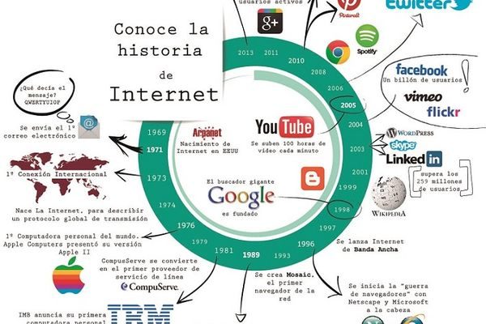

Internet ha transformado completamente la forma en que nos comunicamos, trabajamos y accedemos a la información. Lo que comenzó como un proyecto militar en los años 60 se ha convertido en la red más grande del mundo, conectando a miles de millones de dispositivos y personas. Este artículo explora los hitos más importantes en la evolución de Internet y su impacto en la sociedad moderna.
Internet nació de la necesidad del Departamento de Defensa de Estados Unidos de crear un sistema de comunicación descentralizado y resistente. ARPANET, creada en 1969, fue la primera red de computadoras en compartir información mediante la técnica de conmutación de paquetes. Esta innovación revolucionaria permitía que los datos se dividieran en pequeños paquetes que podían viajar independientemente a través de la red y recombinarse en su destino. A lo largo de los años 70 y 80, ARPANET se expandió y evolucionó, incorporando nuevos protocolos como TCP/IP, que se convirtieron en el estándar de comunicación. En los años 90, con la invención de la World Wide Web por Tim Berners-Lee y la llegada de navegadores gráficos como Mosaic, Internet se volvió accesible para el público general, marcando el comienzo de la era moderna de la web.
